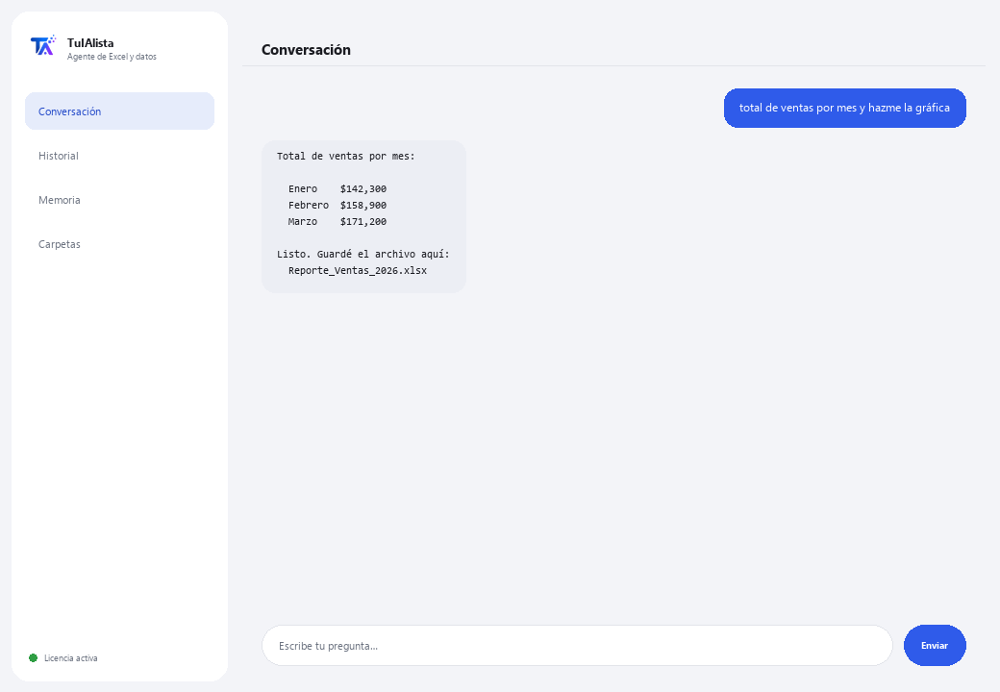

Agente de Excel y datos
Le pides lo que quieras en tu idioma y lo HACE de verdad: totales, cruces, tablas dinámicas, gráficas y reportes — sin que escribas una fórmula.
¿Qué resuelve y qué necesitas?
No es un chat que solo comenta tus datos: es un analista que ejecuta la operación de verdad (código pandas/openpyxl, en un sandbox local seguro) y te entrega el resultado — tabla en pantalla y el archivo Excel o la gráfica lista para abrir.
- Necesitas: tu clave de licencia (TIA-XXXX-XXXX-XXXX-XXXX) y la carpeta con tus hojas de Excel (.xlsx) o CSV. Nada de Python ni fórmulas.
- Primer resultado en menos de 5 minutos: instalas, activas, eliges tu carpeta y le pides “total de ventas por mes y hazme la gráfica”.
- Tus datos nunca salen de tu computadora — a la IA solo va la estructura (columnas), nunca los datos, y las recetas más comunes ni siquiera usan IA.
soporte@tuialista.com o entra a tuialista.com/soporte — normalmente respondemos el mismo día hábil.1 Qué hace este agente
Le apuntas a tus hojas y le pides cualquier cosa en tu idioma:
- “saca el total por región y hazme la gráfica”
- “crea una hoja con estas columnas y relaciónala con el otro archivo”
- “reporte ejecutivo con formato, tabla dinámica y gráfica embebida”
El agente entiende, arma la operación y la ejecuta de verdad en un sandbox local seguro — no solo te describe qué haría. Además:
- Tiene recetas deterministas (sin IA, nunca fallan) para lo más común: conciliar 2 archivos, consolidar, cuentas por cobrar con antigüedad, inventario bajo mínimo, BUSCARV, tablas dinámicas, flujo de caja, IVA, y más.
- Recuerda entre preguntas: puedes decirle “agrégale esto al archivo anterior” o “guárdalo en mis documentos”.
- Puede grabar rutinas tuyas de varios pasos y repetirlas cuando se lo pidas.
- Tiene un modo en vivo: si ya tienes el Excel abierto, puede leer y escribir celdas directamente ahí (con tu confirmación antes de escribir nada).
2 Instalación (2 minutos)
Para Windows. No hace falta internet permanente ni subir nada a la nube.
Baja el instalador desde tuialista.com/descargar (agente Excel) y ábrelo. Crea un acceso directo en tu escritorio con el logo — no requiere Python ni terminal.
Doble clic al ícono nuevo. Pega tu clave de licencia (te llegó por correo al comprar) y pulsa Activar. Verás una palomita verde cuando sea válida.
Selecciona la carpeta con tus hojas de Excel (.xlsx) o CSV y pulsa Comenzar a usar el agente. La próxima vez arranca directo — recuerda tu clave y tu carpeta.
3 Cómo usarlo
El agente abre una ventana de chat, como una app de mensajería — no es una pantalla negra de programador. No hay comandos que memorizar: le pides lo que necesites como se lo pedirías a un analista, pulsas Enviar (o Enter), y él lo hace:

Lo que hace SIN necesitar IA (modo seguro, activado por defecto)
- Conciliar 2 archivos / detectar faltantes
- Consolidar varios archivos en uno · quitar duplicados · limpiar
- Cuentas por cobrar con antigüedad (30/60/90)
- Inventario: bajo mínimo · valorizar · stock muerto
- Cruzar y traer datos (BUSCARV) · tablas dinámicas · top-N · totales por X
- Comparar precios/versiones · cotización más barata · detectar anomalías
- Flujo de caja · presupuesto vs real · IVA · horas del checador
¿Quieres ver las 20 recetas completas con un ejemplo real de cada una? Consulta el Catálogo de recetas — un documento aparte por lo extenso: catalogo_recetas.pdf junto a este manual, o la versión interactiva en tuialista.com/guia/excel/recetas.
Memoria y rutinas
Puedes decirle “guarda esto como mi reporte semanal” para repetir una operación después con “corre mi reporte semanal”, o “retoma lo de ayer” para seguir donde quedaste — incluso en otra sesión.
Modo en vivo (Excel abierto)
Si ya tienes el archivo abierto en Excel, puedes pedirle cosas directas sobre celdas (“¿cuánto suma B2:B40?”, “pon en D5 el total”). Las lecturas responden al instante; las escrituras te muestran una vista previa y esperan tu “sí” antes de tocar el archivo.
4 Ejemplos de uso común
Sacar un total sin fórmulas
“¿cuál fue el total de ventas de marzo?”
Comparar periodos o categorías
“compara las ventas de enero contra febrero por región” — responde con una tabla comparativa.
Conciliar dos archivos
“concilia el archivo de banco contra el de contabilidad y dime qué falta” — receta determinista, sin IA.
Un reporte completo
“reporte ejecutivo con formato, tabla dinámica y gráfica embebida” — te entrega el archivo Excel listo.
5 Preguntas frecuentes
¿Mis datos se suben a internet?
¿Qué formatos acepta?
¿De verdad ejecuta la operación o solo la describe?
¿Qué pasa si le pido algo fuera de las recetas probadas?
¿El modo en vivo puede dañar mi Excel abierto?
¿En qué idioma me responde?
¿Puede leer varios archivos a la vez?
¿Puedo cambiar la carpeta de datos?
¿Modifica mis archivos originales?
¿Qué son las “rutinas”?
6 Solución de problemas
No carga un archivo de Excel
Muestra “0 hojas cargadas”
Dice “Licencia no válida” o pide reconectar
Dice que esa tarea no está en modo seguro
El modo en vivo no responde
¿Ninguna de estas soluciones resolvió tu problema? Escríbenos directamente — con gusto lo revisamos contigo.
soporte@tuialista.com o entra a tuialista.com/soporte — normalmente respondemos el mismo día hábil.7 Privacidad y confidencialidad
Tus datos nunca salen de tu computadora.
- Las recetas deterministas (conciliar, consolidar, cuentas por cobrar, inventario, BUSCARV, tablas dinámicas, flujo de caja...) corren 100% local, sin IA.
- Para tareas nuevas con IA (modo experto), a la IA solo se le envía la estructura (nombres de columnas), nunca tus datos.
- Lo único que viaja por internet es: (1) una comprobación de que tu licencia está activa, y (2) la estructura de tus hojas cuando se necesita IA para una tarea nueva.